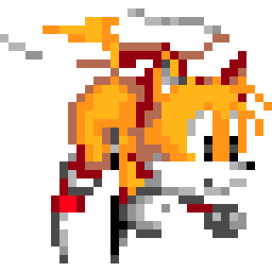
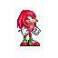

Sonic 3 - Angel Island Revisited (Sonic 3 A.I.R.) is an unofficial port of Sonic 3 & Knuckles for Windows PCs. It very closely resembles the original game, but adds features you would only expect from a modern fan game engine - including full support for 16:9 widescreen display, alpha transparency effects, and smooth 360° rotation. Since early 2019, the port of all original game zones is complete and Sonic 3 A.I.R. receives frequent updates since then, including a lot of new features and game options.
Features:
- The complete Sonic 3 & Knuckles campaigns in 16:9 widescreen
- Fully overhauled Blue Sphere stages in constant 60 FPS
- Time Attack mode in almost all zones & acts
- Remastered soundtrack by DJ Spindash
- Many options to change the game as you like to play it
- A whole bunch of achievements
- Unlockables extras including Knuckles & Tails combo, Drop Dash, and Super Peel-Out
- Controller support (Xbox, DualShock, and many more.)
- Modding capabilities including music & sprite mods
- The complete Blue Sphere game with its over 130.000.000 generated stages (needs to be unlocked)
- An option to exchange the special stages with a random selection of the generated Blue Sphere stages
- Max. Control Time Attack with all of Sonic's abilities (needs to be unlocked)
- Character palette modding support, for those of you interested in modding - or in using mods
Requirements:
The program essentially gets data from the ROM and a port of the original game. It doesn't need much:
Download
Latest version: 19.09.28.1 (SAGE 2019 Build + Hotfix)
Before downloading, please make sure you have the Steam version of Sonic 3 & Knuckles installed on your PC to support the original company of the game. Otherwise you can get an illegal copy/rom of the game, and we do not condone piracy.
Direct Download (can be slow) Google Drive Link